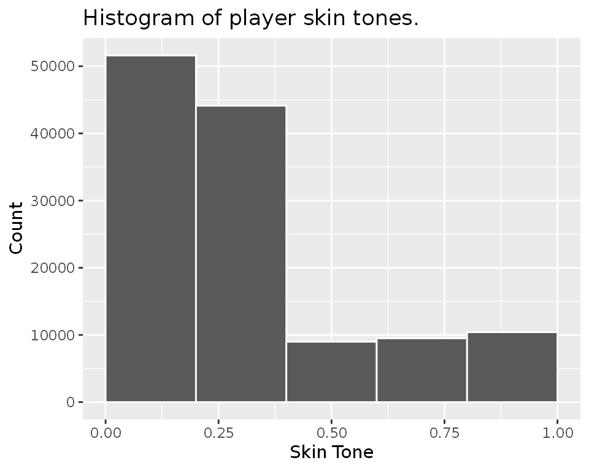
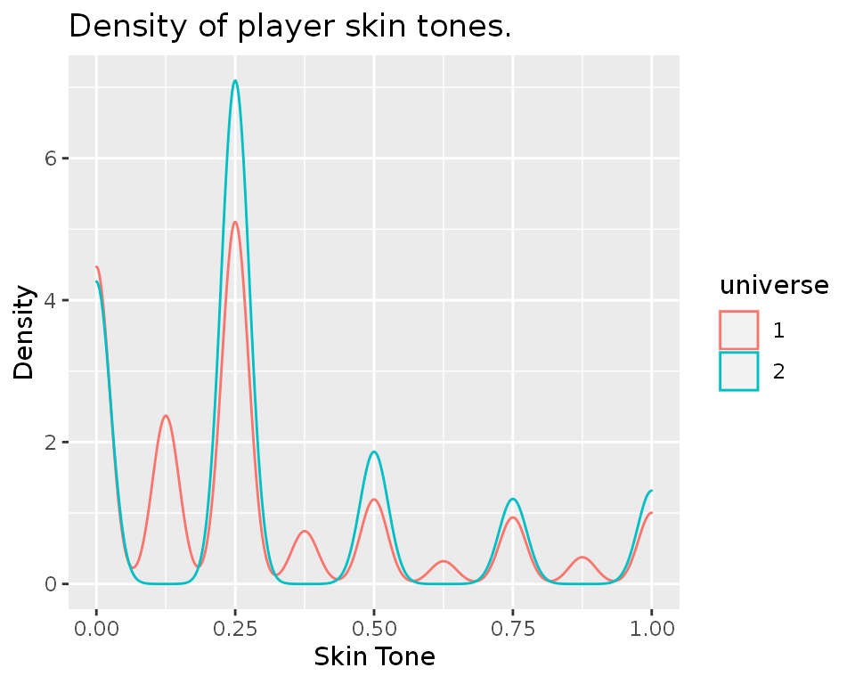
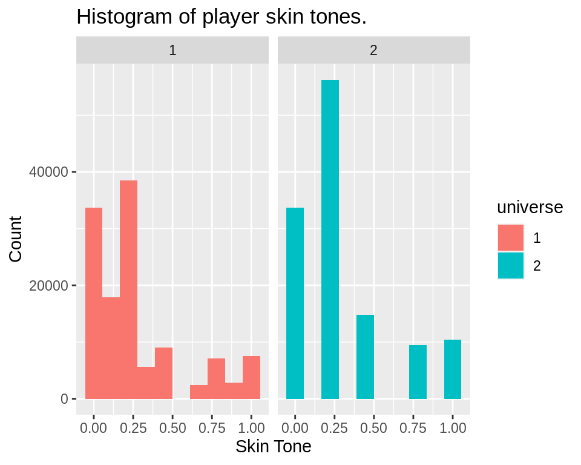

example-1.RmdThe library comes preloaded with a dataset, soccer, from (Silberzahn et al. 2014) on card counts per each pair between 2,053 soccer players and 3,147 referees. Below are the first few lines of the dataset.
library(mverse) #> Loading required package: magrittr #> #> Attaching package: 'mverse' #> The following object is masked from 'package:magrittr': #> #> extract #> The following object is masked from 'package:base': #> #> summary knitr::kable(head(soccer)) # using kable for displaying data in html
| playerShort | player | club | leagueCountry | birthday | height | weight | position | games | victories | ties | defeats | goals | yellowCards | yellowReds | redCards | rater1 | rater2 | refNum | refCountry | meanIAT | nIAT | seIAT | meanExp | nExp | seExp |
|---|---|---|---|---|---|---|---|---|---|---|---|---|---|---|---|---|---|---|---|---|---|---|---|---|---|
| lucas-wilchez | Lucas Wilchez | Real Zaragoza | Spain | 31.08.1983 | 177 | 72 | Attacking Midfielder | 1 | 0 | 0 | 1 | 0 | 0 | 0 | 0 | 0.25 | 0.50 | 1 | 1 | 0.3263915 | 712 | 0.0005641 | 0.3960000 | 750 | 0.0026965 |
| john-utaka | John Utaka | Montpellier HSC | France | 08.01.1982 | 179 | 82 | Right Winger | 1 | 0 | 0 | 1 | 0 | 1 | 0 | 0 | 0.75 | 0.75 | 2 | 2 | 0.2033747 | 40 | 0.0108749 | -0.2040816 | 49 | 0.0615044 |
| abdon-prats | Abdon Prats | RCD Mallorca | Spain | 17.12.1992 | 181 | 79 | NA | 1 | 0 | 1 | 0 | 0 | 1 | 0 | 0 | NA | NA | 3 | 3 | 0.3698936 | 1785 | 0.0002295 | 0.5882973 | 1897 | 0.0010016 |
| pablo-mari | Pablo Mari | RCD Mallorca | Spain | 31.08.1993 | 191 | 87 | Center Back | 1 | 1 | 0 | 0 | 0 | 0 | 0 | 0 | NA | NA | 3 | 3 | 0.3698936 | 1785 | 0.0002295 | 0.5882973 | 1897 | 0.0010016 |
| ruben-pena | Ruben Pena | Real Valladolid | Spain | 18.07.1991 | 172 | 70 | Right Midfielder | 1 | 1 | 0 | 0 | 0 | 0 | 0 | 0 | NA | NA | 3 | 3 | 0.3698936 | 1785 | 0.0002295 | 0.5882973 | 1897 | 0.0010016 |
| aaron-hughes | Aaron Hughes | Fulham FC | England | 08.11.1979 | 182 | 71 | Center Back | 1 | 0 | 0 | 1 | 0 | 0 | 0 | 0 | 0.25 | 0.00 | 4 | 4 | 0.3251852 | 127 | 0.0032968 | 0.5384615 | 130 | 0.0137522 |
The dataset was used to study whether racial bias played a role when referees issued the cards. For each player, two independent raters coded their skin tones on a 5-point scale ranging from very light skin (0.0) to very dark skin (1.0) with neither dark nor light skin(0.5) as the centre value.
We would like to study the distribution of the player skin tones but the two independent rating do not always match. To combine the two ratings, you may consider the following options:
mverse library.Let’s first consider how you might study the five options using base R.
First, we will define the five options as separate variables.
# remove rows with no rating soccer <- soccer[!is.na(soccer$rater1), ] skin_option_1 <- ( # mean soccer$rater1 + soccer$rater2) / 2 skin_option_2 <- ifelse( # max soccer$rater1 > soccer$rater2, soccer$rater1, soccer$rater2) skin_option_3 <- ifelse( # min soccer$rater1 < soccer$rater2, soccer$rater1, soccer$rater2) skin_option_4 <- soccer$rater1 # first skin_option_5 <- soccer$rater2 # second
We can plot their histograms to study the distributions. We will use the ggplot2 library for plotting.
library(ggplot2) ggplot(mapping=aes(x = skin_option_1)) + geom_histogram(breaks = seq(0,1,0.2), colour = 'white') + labs(title = 'Histogram of player skin tones.', x = 'Skin Tone', y = 'Count')

Now, for the remaining four variable definitions, we will have to repeat the step above.
mverse.We will now learn how we can create the options using the mverse package. We first consider the first two options.
First, we will define a mverse object from the data set.
mv <- create_multiverse(soccer)
In mverse package, an alternative variabe definition is called a variable branch. You can create a variable branch with the function variable_branch.
skin_tone <- variable_branch( (rater1 + rater2)/2, ifelse(rater1 > rater2, rater1, rater2) )
You can then add the variable branch rules to the mverse object using add_variable_branch. You can use the tidyverse’s dplyr grammar for defining the variable rules.
mv <- mv %>% add_variable_branch(skin_tone) %>% execute_multiverse()
The object name skin_tone is the name of the new variable defined. Each alternative definition creates an alternative universe in the mverse object. execute_multiverse generates the new variable based on the branching rules provided by add_variable_branch.
You can see the variable branch added with summary method for the mverse object.
summary(mv) #> # A tibble: 2 x 2 #> universe skin_tone_branch #> <int> <chr> #> 1 1 (rater1 + rater2)/2 #> 2 2 ifelse(rater1 > rater2, rater1, rater2)
In this section, we will now examine and compare the distributions of the variable branches. You can extract the resulting value of branched variables using extract method. By default, it returns the branched variables across all universes with the universe index. Note that the universe index column is returned as a factor variable.
It provides various options to select a subset of data only. universe and nuni are useful if you want to select a subset of universes in the multiverse. frow provides the option to extract a fraction of data in each universe.
Using the output tibble, you can construct plots to compare their distributions in different universes. For example, you can overlay density lines on a single plot.
branched %>% ggplot(mapping = aes(x = skin_tone, color = universe)) + geom_density(alpha = 0.2) + xlab('Skin Tone') + ylab('Density') + ggtitle('Density of player skin tones.')

Another option is the use ggplot’s facet_grid function to generate multiple plots in a grid.
branched %>% ggplot(mapping = aes(x = skin_tone, fill = universe)) + geom_histogram(position = 'dodge', bins = 10) + labs(title = 'Histogram of player skin tones.', y = 'Count', x='Skin Tone') + # you can add axis labels and plot title with labs. facet_grid(. ~ universe) # generate histograms for each universe.

Silberzahn, Raphael, Eric Luis Uhlmann, Dan Martin, Pasquale Anselmi, Frederik Aust, Eli C. Awtrey, Štěpán Bahník, et al. 2014. “Many Analysts, One Dataset: Making Transparent How Variations in Anlytical Choices Affect Results.” https://osf.io/gvm2z/.